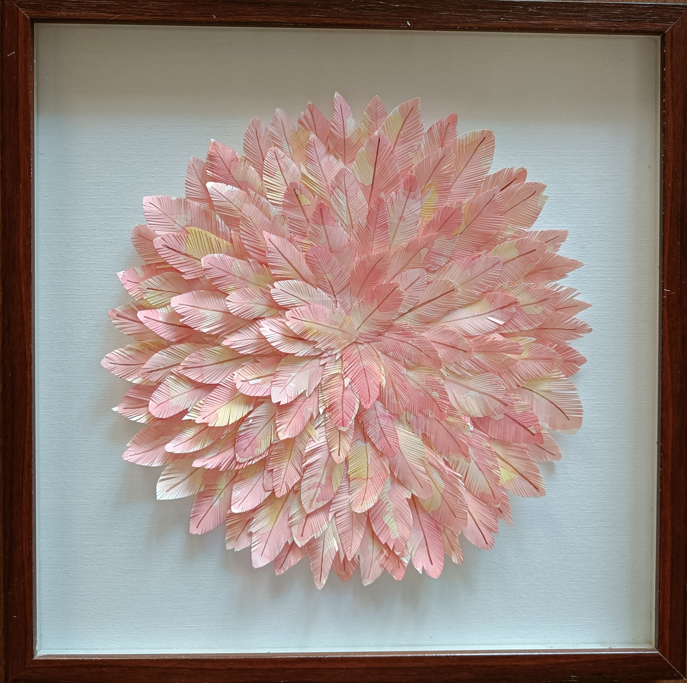
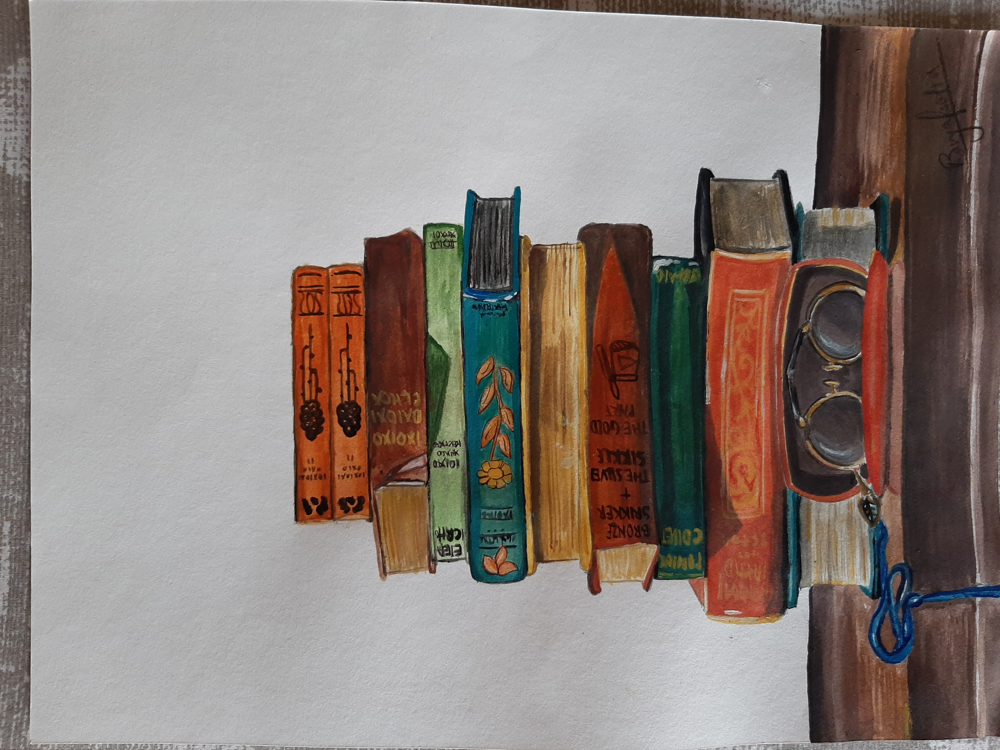
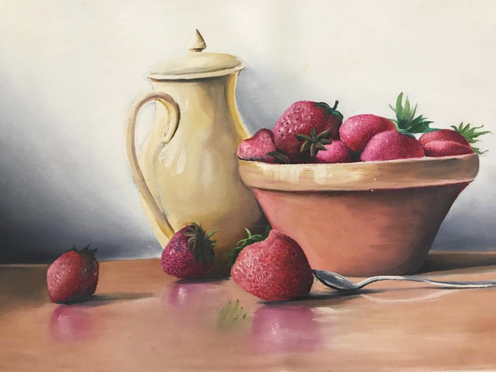

Painted Paper Feature
Layered paper experiments combining Memphis-inspired shapes with high-contrast textures.
A mix of visual design, digital projects, and smaller creative explorations that reflect how I think, make, and experiment.
Longer-form work where design, problem solving, and storytelling come together.

A study on how Zara.com could evolve visually and structurally without breaking the core brand.
Check It Out!
A bold visual study transforming a minimal template into a vibrant Constructivist + Memphis hybrid.
See Transformation
A community-focused surf platform designed to help surfers explore safely, connect locally, and share knowledge.
View Project
A curated collection of writing exploring memory, identity, humor, and belonging.
Read the CollectionSmaller studies, art pieces, and image-based work that feed into how I think about composition, color, and mood.

Layered paper experiments combining Memphis-inspired shapes with high-contrast textures.

Hand-painted scene composed directly over the spread of a vintage architecture catalog.

Cut-paper still life inspired by constructivist palettes, focusing on negative space.

Mini oil paint study exploring loose brushwork and warm analog hues.

Graphite and ink sketch focused on architectural rhythm and everyday motion.

A playful gouache still life inspired by fresh markets and Memphis color palettes.